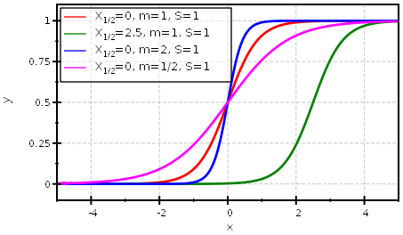
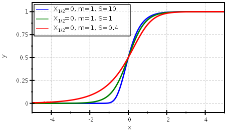

$$qf_commondoc_header.start$$ $$qf_commondoc_header.end$$
Function Definition
$$bmath:f(x)=Y_0+\frac{Y_1-Y_0}{\left(1+10^{\left(X_B-x\right) \cdot m}\right)^S}$$
$$bmath:\text{with:}\ \ \ \ \ X_B=X_{1/2}+\frac{1}{m}\cdot\log_{10}\left[2^{1/S}-1\right]$$
- Here $$math:Y_0, Y_1$$ are the lower and upper limit of the function.
- The parameter $$math:X_{1/2}$$ is the half decay value with $$math:f(X_{1/2})=0.5$$.
- The inflection point is given by $$math:X_I=X_B+\frac{1}{m}\cdot\log_{10}(S)$$.
- The slope at $$math:x\equiv X_{1/2}$$ is given by $$bmath:\frac{df}{dx}_{x=X_{1/2}}=\frac{(Y_1-Y_0)\cdot m\cdot\mbox{ln}(10)\cdot S\cdot\left(1-\frac{1}{2^{1/S}}\right)}{2}$$
- The parameter $$math:m$$ determines the slope and $$math:S$$ accounts for an asyymetry of the curve ($$math:S=1$$ is symetric).
$$ref:GIRALD2002:Giraldo, Jesús; Vivas, Nuria M.; Vila, Elisabet; Badia, Albert (2002): Assessing the (a)symmetry of concentration-effect curves, Pharmacology & Therapeutics 95(1), p. 21-45, 2002$$
Example


References
$$references$$